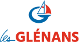
Soutenance UC1-UC2 · BPJEPS voile habitable
¿¡ Anacoluthe !?
En embarqué, le plus délicat, c'est l'humain
Mes encadrements bénévoles
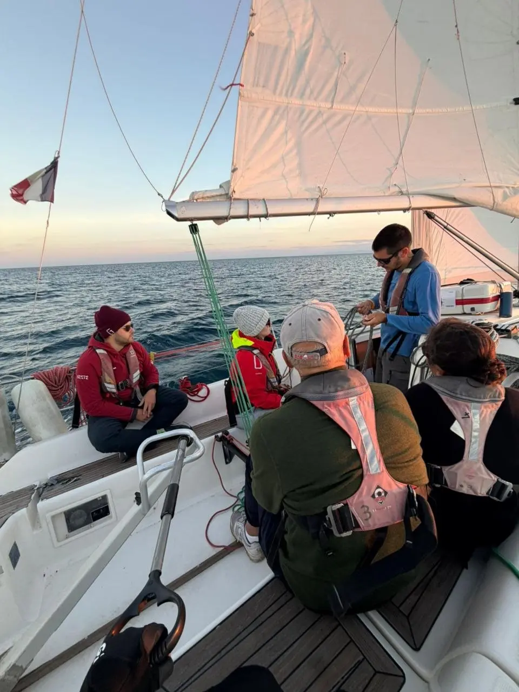
Romain Gauvrit, responsable croisière
de moins en moins de moniteurices bénévoles encadrent en embarqué à Marseillan
Les rapports de mer
de plus en plus de rapports de mer à origine « facteur humain »
Demandons aux moniteurices
« Qu'est-ce qui te fait choisir
entre un stage sur base
et un stage en embarqué ? »
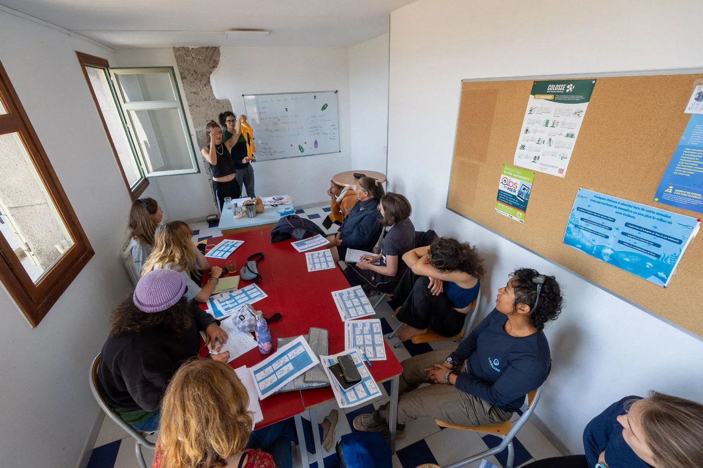
La question
Comment donner aux moniteurices
les moyens d'animer le vivre-ensemble
dans un contexte qui génère autant de tensions
que d'opportunités d'apprentissage ?
« Créer, entre les hommes et les femmes de tous les pays, des liens par la mer »
Et pourtant, le vivre-ensemble est déjà au menu
Les stagiairesgrille de progression Glénans


Les moniteuricesCQP-IV


Le terrain de Marseillan et ses contraintes


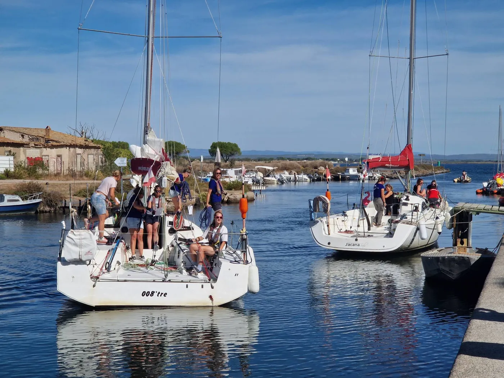
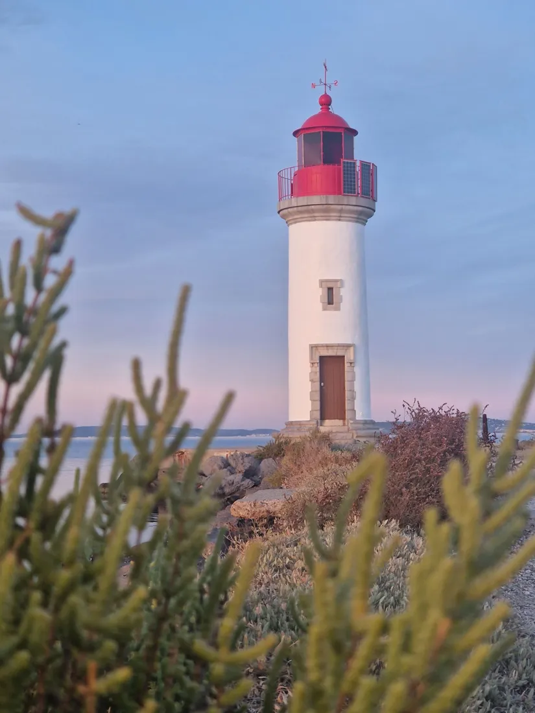

10 mois de saison± 6 stages sur base
± 8 à 10 en embarqué
Les bénévoles d'abordpuis les BP et les contractuels pour combler les manques
Les apprentis en embarquéen grande majorité, avec de la supervision et du tutorat
Des méthodes qui découlent des contraintes
Trois publics, reliés
Les référents de l'activité
être moins sollicités sur les tensions, pour accompagner les moniteurices
Les moniteurices
animer le vivre-ensemble et l'enseigner
Les stagiaires
apprendre à coopérer en même temps qu'à naviguer
Les objectifs pédagogiques
La moniteurice débutante
Alléger la charge cognitive
- faciliter l'organisation collective à bord
- repérer et désamorcer une tension
La moniteurice expérimentée
Passer de diriger à animer
- dégager du temps pour encadrer en profondeur
- animer les temps d'équipage
- guider l'équipage pour qu'il régule lui-même une tension
Lae stagiaire
Coopérer, en mer et de retour à terre
- questionner sa posture relationnelle
- tenir un rôle dans l'organisation collective
- nommer une tension et la réguler ensemble
Une équipe pour y arriver
Les référents de l'activité
Le chef de base
supervisent
Les moniteurices testeurs
Les stagiaires
testent et co-conçoivent
Moi, animateur de l'initiative
Six intervenants thématiques
actions spécifiques
Quatre phases, un enjeu chacune
- 1Diagnostic et cadragedébut de saison 2025 Comprendre le terrain
- 2Conception itérativesaison 2025 Prototyper rapidement
- 3Déploiement et formationsaison 2026 Déployer dans les contraintes
- 4Évaluation et capitalisationfin de saison 2026 Évaluer pour évoluer
Les productions de l'équipe

Une boîte à outils
pour les équipages

Des ateliers-formations
pour les moniteurices

Des outils rénovés
pour les référents de l'activité
Une boîte à outils autonome
- Ce qui est imprimé à bord s'utilise en totale autonomie
- Chaque bloc est indépendant


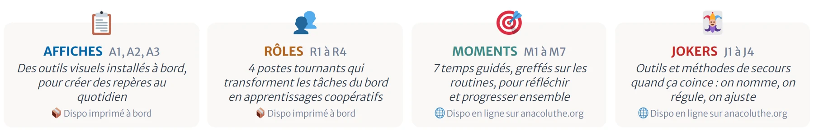
Un cycle de co-conception,
répété de la V1 à la V5
- 1Prototypageavec les intervenants thématiques
- 2Testsur le terrain en escadre
- 3Recueil des retoursentretiens et échanges individuels
- 4Réflexion sur les modificationsen atelier
Des pépites, chacune pour un public
Quatre exemples, un par famille du kit : chaque carte répond au besoin d'un public précis.
pour la débutante
pour les stagiaires curieux
pour toutes, même les habituées
pour les stagiaires et les moniteurices réticentes
Hors des bateaux, des affiches sur la base
Pour que le kit soit pris en compte, on en parle aussi sur les bases.
- Faire savoir l'initiative : le kit et les formations
- Acculturer au vocabulaire du vivre-ensemble
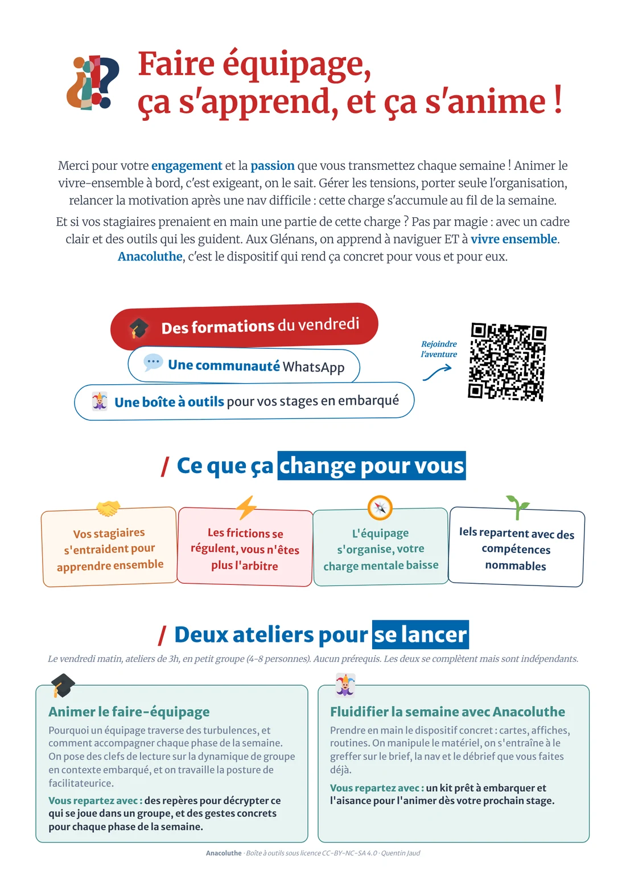

2025 - passer par l'expérimentation
À l'issue, la moniteurice est capable de
- parler du vivre-ensemble avec un vocabulaire approprié
- nommer une situation relationnelle
- trouver une piste de réponse en tant qu'animateurice
12testeur·ses fréquent·es,23occasionnel·les
bénévoles occasionnels, BSC, contractuels CQP, permanents
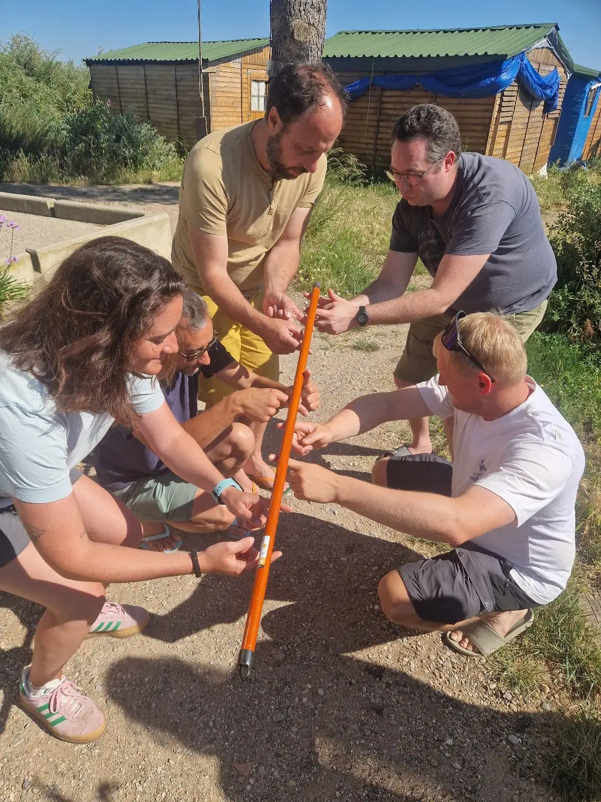
2026 - consolider des savoirs
À l'issue, la moniteurice est capable de
- situer son équipage dans les étapes de la vie d'un groupe
- choisir un geste d'animation adapté à cette étape
- analyser sa posture d'animateurice avec l'aide de ses pairs
22moniteurices formées
BSC, stagiaires CQP, moniteurices habituées
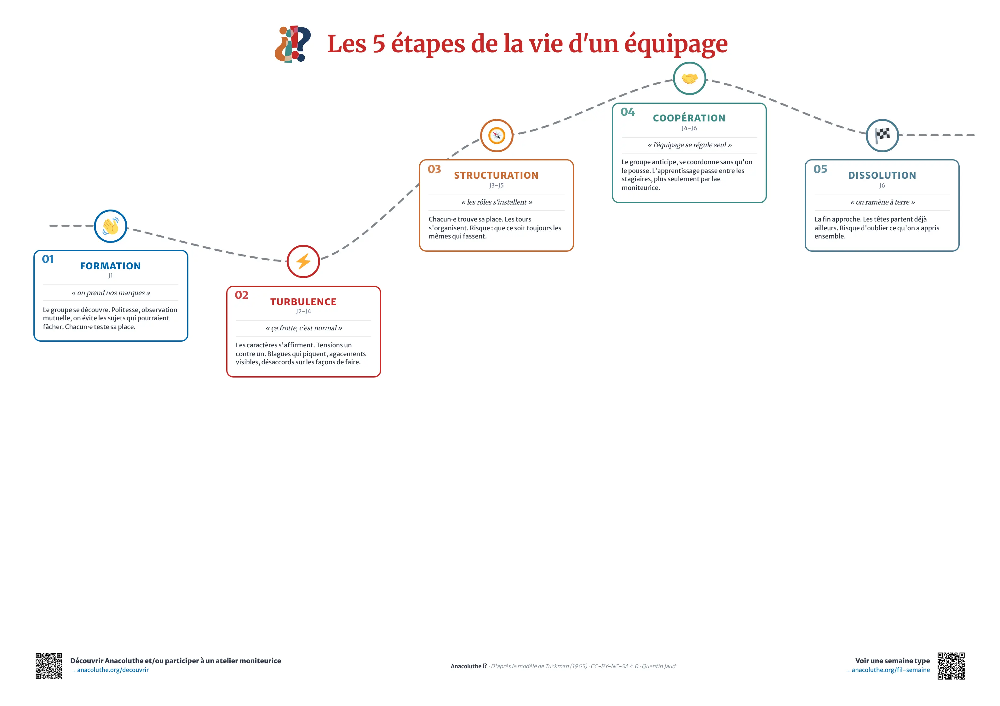

Les interactions avec les référents de l'activité
Leurs missions : briefs de démarrage et débriefs de fin de semaine, permanence RTQ dans la semaine, tutorat des moniteurices en embarqué.
- 1Comprendre le terrain
- aide au diagnostic
- informations sur le terrain
- 2Créer des outils utiles
- informations sur les ateliers
- consultations sur l'utilité des outils
- 3Diffuser
- formation à l'outil final
- planification des formations
- rénovation de leurs supports
- 4Se projeter
- entretiens de fin, sur les retours et les perspectives
- réflexions sur les leviers de pérennisation
Comment et quoi évaluer ?
Les stagiaires
coopérer à bord, et le réinvestir à terre
- climat à bord
- expression des tensions
- circulation de la parole
- fluidité de l'organisation
- savoir-être identifiés
- réutilisation envisagée à terre
+28 pointsde stagiaires qui pensent réutiliser à terre ce qu'ils ont appris
43 questionnaires · 68 % avec kit, 40 % sans
Les moniteurices
animer le vivre-ensemble en autonomie
- appropriation du kit
- dynamiques d'équipage
- charge d'animation
- diffusion sans le concepteur
- envie d'embarquer
2/3des répondant·es se sentent plus enthousiastes à l'idée d'embarquer
9 entretiens · 6 à Marseillan, 3 en écoles extérieures
Ce qui a marché, et comment aller plus loin
Plus loin
- des référents formés sur chaque base
- le contenu du site transféré sur le site du CEB
Plus loin
- dans les contenus de démarrage de toutes les bases
- dans l'inventaire de tous les bateaux
- dans la documentation du CEB
Plus loin
- des temps de formation planifiés
- des contenus pour les responsables pédagogiques
Retour à la question
Comment donner aux moniteurices
les moyens d'animer le vivre-ensemble
dans un contexte qui génère autant de tensions
que d'opportunités d'apprentissage ?
Merci
Une aventure collective
que j'ai pris (beaucoup de) plaisir à animer
- 6 intervenants thématiques hyperactifs
- +30 moniteurices testeur·ses
- +300 stagiaires
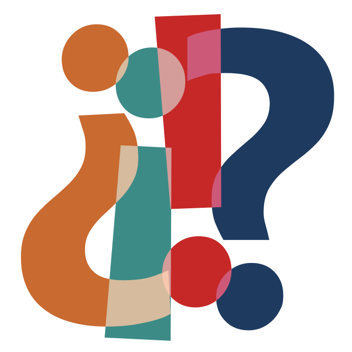
Merci !
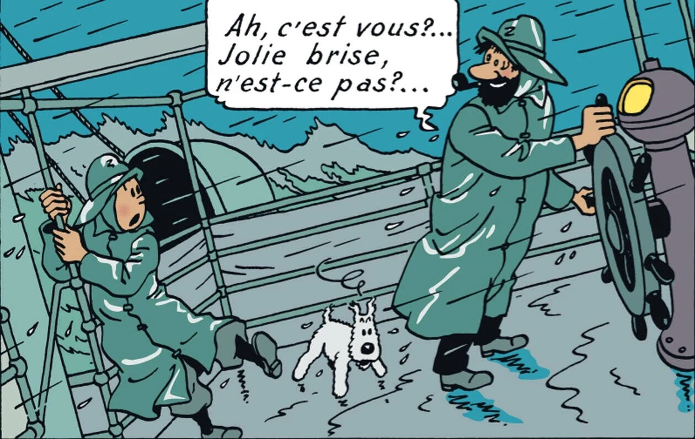
De l'adaptabilité
dans une organisation tournée vers la pratique sportive
planifier · s'adapter ·
convaincre en interne
Et la suite
Comment mettre la voile au service de la transformation sociale ?